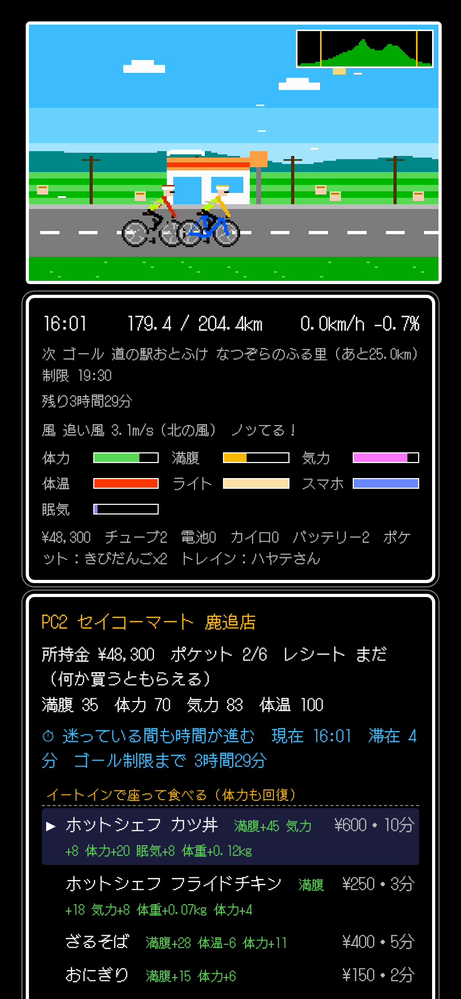
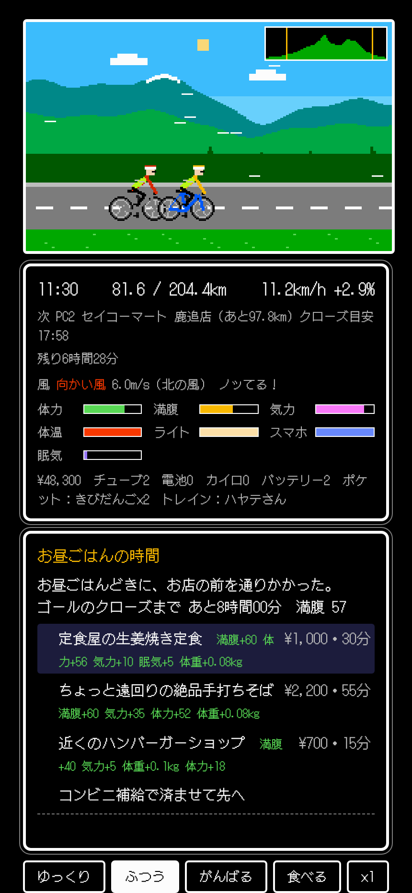
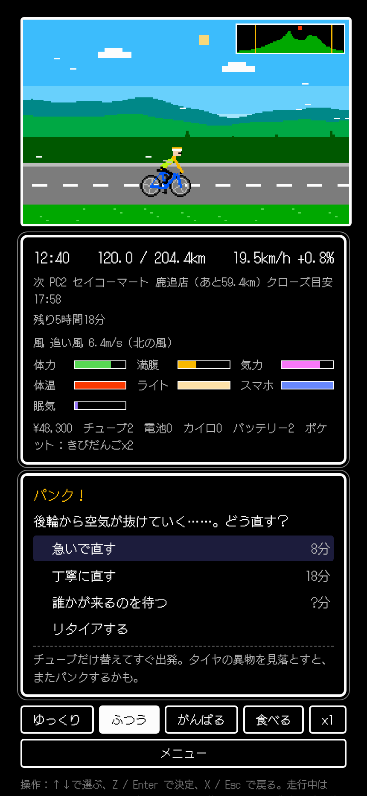
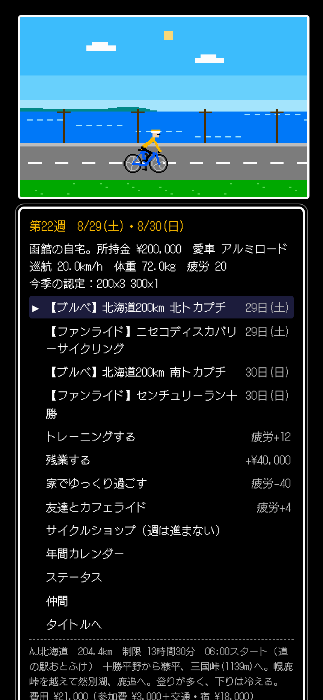

01 — SEASON
毎週、何をするか
自分で決める。
カレンダーは2026年の実際の開催日。ブルベのない週は、ヒルクライムやグラベル、地元のファンライドに出たり、 仲間とカフェライドに行ったり、家でゆっくり休んだり。走れば疲労がたまり、疲れが残ると体力の上限が下がります。
毎週の選択
出るか、鍛えるか、休むか
- その週のブルベ・ヒルクライム・グラベル・ファンライド・シクロクロスにエントリー
- トレーニング（ローラー練・峠練・ロング練・ダイエット）で巡航速度や登坂力を上げる
- 残業して機材費を稼ぐ／家でゆっくり過ごして疲労を抜く
- 仲間を誘って近所の湖畔や丘のカフェへ
お金と移動
住む町で交通費が変わる
- 函館・札幌・旭川・帯広から選んでスタート。遠征先までの交通費と宿代がかかる
- 片道のブルベ（北へ600、札幌までまだ400）は帰りの輪行代も
- 毎月おこづかいが入る。参加費はAJ北海道3,000円、ランドヌール札幌1,700円
機材
最初のバイク選びから
- クロスバイク・MTB・クロモリ・アルミ・チタンロード。フレームの色も選べる
- コンポ（105〜デュラエース）、カーボンホイール、DHバー、耐パンクタイヤ
- 車検はBRM/AJ規定どおり。400km以上は前照灯2灯とヘルメット尾灯が必要
シーズンの終わり
SRを取れるか
- 200・300・400・600kmを完走すればスーパーランドヌール
- 1000km摩周湖を完走すれば、それも記録に
- 10月が終わったら、同じ日程で次のシーズンへ
02 — COURSES
実際の開催日と、
その土地の寄り道。
開催日・スタート地点・スタート時刻・経由地は主催者の大会ページから。いかめし、霧立亭の大盛りそば、積丹のウニ、 江差のラッキーピエロ、ナイタイテラスのソフトクリーム。PCとPCの間には、地図を見て置いた名所や出来事があります。 走行記の付いたコースは、作者の走行記録をもとにしています。
| 開催日 | ブルベ | 距離 | スタート | 主催 |
|---|---|---|---|---|
| 4/26 | 穂別200 | 200km | むかわ町穂別 | AJ北海道 |
| 5/3 | 函館200走行記 | 200km | 函館 元町公園 | AJ北海道 |
| 5/4 | 風連200 | 200km | 旭川 神楽岡公園 | ランドヌール札幌 |
| 5/16 | 平取300 | 300km | むかわ町 | AJ北海道 |
| 5/24 | 恵庭北200 | 200km | 道の駅 花ロードえにわ | ランドヌール札幌 |
| 5/30 | 美瑛の丘300 | 300km | 滝川ふれ愛の里 | AJ北海道 |
| 6/13 | 積丹400 | 400km | 札幌 桑園公園 | ランドヌール札幌 |
| 6/20 | 音更300 | 300km | 道の駅おとふけ | AJ北海道 |
| 7/4 | 長万部400走行記 | 406km | 長万部公園キャンプ場 | AJ北海道 |
| 7/18 | 宗谷岬600 | 600km | 旭川 | AJ北海道 |
| 7/18 | 後志300 | 300km | ニセコ ひらふ | ランドヌール札幌 |
| 7/18 | どうなんだよ600 | 600km | ニセコ ひらふ | ランドヌール札幌 |
| 7/20 | ウニタラコ200 | 200km | ニセコ ひらふ | ランドヌール札幌 |
| 8/13 | 摩周湖1000走行記 | 1001km | 札幌 丘珠 | AJ北海道 |
| 8/29 | 北トカプチ200走行記 | 204km | 道の駅おとふけ | AJ北海道 |
| 8/30 | 南トカプチ200 | 200km | 道の駅おとふけ | AJ北海道 |
| 9/12 | 函館300走行記 | 302km | 函館 元町公園 | AJ北海道 |
| 9/19 | 岩木山200 | 200km | 八戸駅 西口 | ランドヌール札幌 |
| 9/20 | 北へ600 | 600km | 函館 昭和公園 | ランドヌール札幌 |
| 9/22 | 浜頓別300 | 300km | 稚内 北防波堤ドーム | ランドヌール札幌 |
| 9/23 | 札幌までまだ400 | 400km | 士別 | ランドヌール札幌 |
| 9/27 | 新十津川200 | 200km | 新十津川 | AJ北海道 |
| 10/18 | 薄野200 | 200km | 札幌 大通公園 | ランドヌール札幌 |
ブルベ以外にも、ニセコHANAZONO・かみふらの十勝岳・ルスツのヒルクライム、十勝グラベル・ニセコグラベル、そらちグルメフォンドなど、 2026年に道内で開かれた27のイベントに出られます。距離や参加費はゲーム用の目安です。
03 — ON THE ROAD
補給しなければ、
脚は止まる。
巡航20km/hの脚から始まります。走っている間は、体力・満腹・気力・体温・眠気、ライトとスマホの電池が減っていく。 向かい風、雨、上り坂、夜。何が起きても、ゴールのクローズ時刻は待ってくれません。




04 — TROUBLES
選び方しだいで、
助かるか、悪化するか。
道中のトラブルは、選択肢を選んで切り抜けます。急げば時間は稼げるけれど、裏目に出ることもあります。
パンク
急ぐ・丁寧に・誰かを待つ
- 急いで直すと8分。ただしガラス片を取り忘れて、またパンクすることも
- 丁寧に直すと18分。異物を取り除いて確実
- 待てば仲間か通りがかりの参加者が助けてくれる……かもしれない
ミスコース
ナビで確認・勘で進む・来た道を戻る
- Ride on QCやサイコンがあれば数分で戻れる
- 勘が当たれば最短、外れれば峠をひとつ余計に
- スマホの電池が切れていると、ナビは使えない
寝落ち寸前
寝る・耐える・歌う・PCまで
- 道端で15分寝るのが確実。体は冷える
- 顔を洗って耐えるとふらついて落車することも
- 次のPCが近ければ、がんばるのもあり
ほかにも
寒さ・雨・鹿・電池切れ・ハンガーノック
- 夜の鹿には大声で叫ぶのがいちばん効く
- ウインドブレーカーとレインウェアは前日に詰めておく
- 前照灯が切れたら2灯目、それもなければ予備電池かモバイルバッテリー
05 — FRIENDS
助けた仲間が、
いつか助けてくれる。
道中で仲間のピンチを手伝うと友情が深まり、スタートでトレインに誘われたり、自分が困ったときに通りかかって助けてくれたりします。 トレインを組むと平地が速くなり、向かい風と体力・気力の消耗が軽くなり、夜はおしゃべりで眠気がまぎれます。
ハヤテさん
登りが速い。予備チューブをよく使い切る。
ノロさん
マイペースで完走する。補給を忘れがち。
ヒカリさん
夜に強いが、ライトの扱いに弱い。スイッチロックに注意。
サムエさん
寒がり。下りで震えている。カイロを持っていこう。
06 — FAQ
よくある質問
コースはどこまで本物ですか？
開催日・スタート地点・スタート時刻・経由地・名物は、AJ北海道とランドヌール札幌の大会ページ（2026年）に合わせています。 摩周湖1000はPCと通過チェックの位置まで作者の走行記録どおりです。それ以外のPCの位置・店・標高は、地図を見てゲーム用に推定したものです。 実際に走るときは、必ず主催者のキューシートを使ってください。
PCのクローズ時刻を過ぎたら失格ですか？
途中のPCのクローズは目安で、過ぎても走り続けられます。ゴールの制限時間（200kmなら13時間30分）を過ぎると認定はもらえません。 通過証明（PCで何か買ってレシートをもらう）が足りなくても失格です。
セーブはどこに保存されますか？
ブラウザの中（localStorage）です。外部への送信はありません。別の端末やブラウザには引き継がれず、ブラウザのデータを消すと消えます。
スマホで遊べますか？
iPhoneの縦持ちを基準にしています。パソコンではキーボードでも操作できます（↑↓で選ぶ、Z/Enterで決定、走行中は1・2・3でペース、Eで食べる、Fで早送り）。
登場する仲間は実在の人ですか？
いいえ、架空の4人です。走行記に出てくる方々の名前は使っていません。
名前の由来は？
ブルベ（brevet）と、ファミコンのRPGのような「クエスト」。北海道の道を、制限時間内にゴールまで旅するゲームです。
BON ROUTE
4月26日、穂別から。
インストールも登録も要りません。ブラウザで開けば、そこがスタート地点です。
MIT License · 依存ライブラリなし
MORE TOOLS
同じ作者の、ほかのツール。
ブラウザだけで動く道具とゲームを、ひとつのページにまとめています。走行記はブログ PikaCycling で。